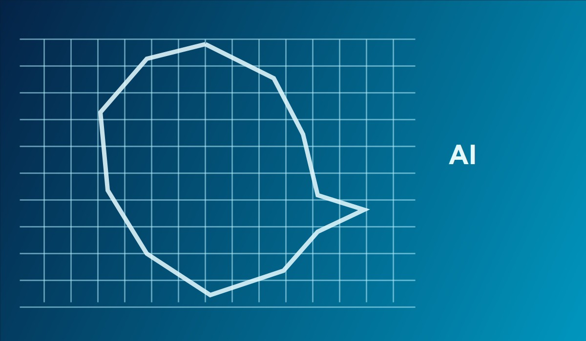

Teknoloji Blogu
Yapay Zeka Dünyayı Nasıl Değiştiriyor?

Günümüzde yapay zeka sadece bir bilim kurgu fantezisi değil, hayatımızın tam merkezinde yer alan bir gerçekliktir. Özellikle makine öğrenimi sayesinde tıp, eğitim ve mühendislik çağ atlıyor.
Tıpta Yapay Zeka
Doktorlar artık hastalıkların teşhisinde büyük veri analizlerini kullanıyor. Bu sayede erken teşhis oranları inanılmaz derecede arttı.
Robotik Cerrahi
Milimetrik hassasiyetle çalışan robot kollar, hata payını azaltarak cerrahlara daha kontrollü ve güvenli işlemler yapma imkanı sunuyor.